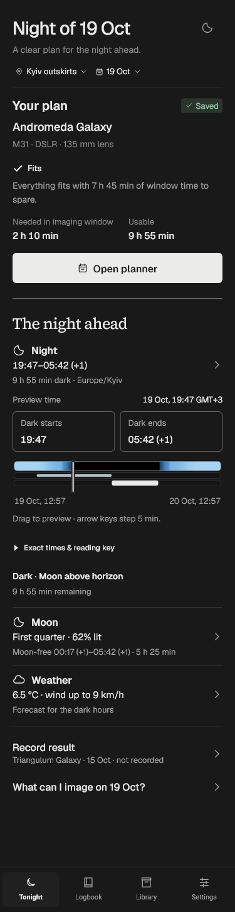
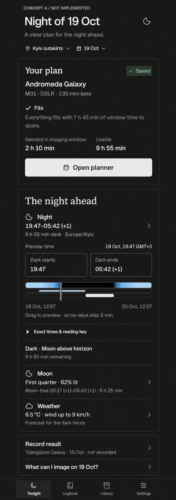
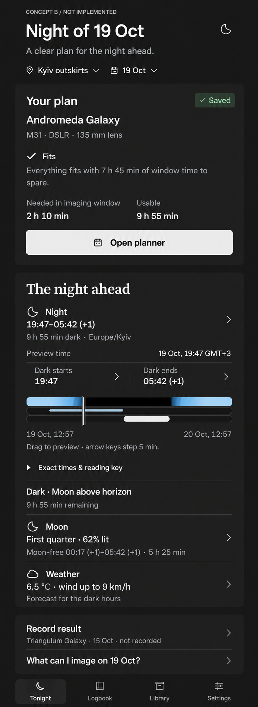

Culmina · Home block exploration
Current · working Flutter
Actual host render after the authorized gap, disclosure and navigation fixes. Dark, 100%, synthetic QA data, 375 × 1450.

A · quiet outlines
Three document blocks; existing jump buttons. A minimal structural proposal. The generated serif Your plan heading is an artifact to exclude.

B · tonal sections
Recommended for discussion: three subtle surfaces and a compact two-action dark-time strip. Exact font metrics, spacing and flat fills remain code-owned.
